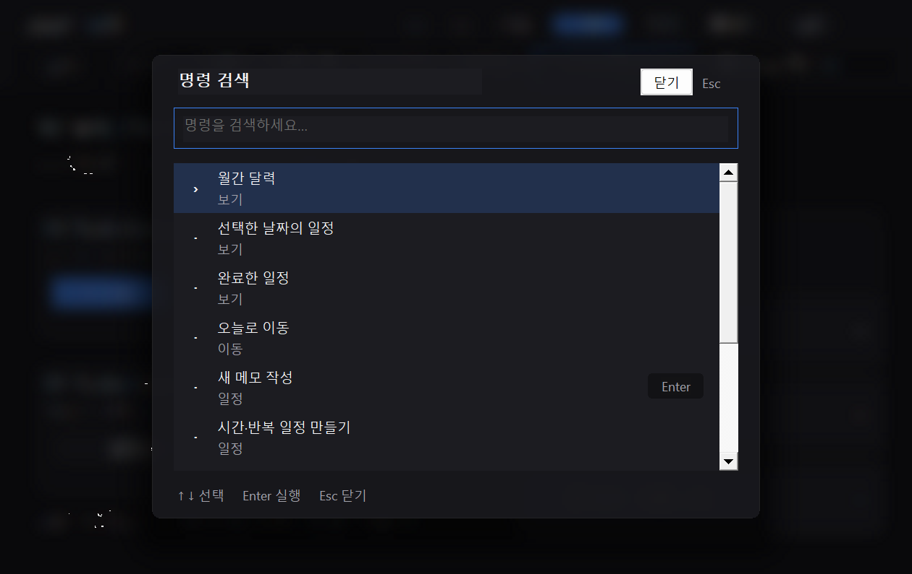

대화는 연결한 AI 도구에서
AI 캘린더에 AI 모델이나 자체 추론 엔진이 내장된 것은 아닙니다. Your dot 등 로컬 도구 실행을 지원하는 AI 환경이 dot-calendar 스킬 또는 MCP를 통해 이 PC의 일정을 조회·추가·변경합니다. 지원되는 AI 환경, 해당 서비스 계정과 연결된 PC가 필요합니다. 외부 AI 서비스의 요금과 이용 조건은 별도입니다.
Windows 바탕화면에 두는 AI 캘린더. 날짜에 바로 메모하고, 완료한 일정과 긴 메모까지 한곳에서 확인하세요. 지원 AI 도구를 연결하면 “내일 3시 회의 추가해줘”라는 대화도 일정으로 이어집니다.
Ctrl + K로 명령을 검색하고 방향키로 이동하세요. Enter로 실행하고 Escape로 닫습니다. 월간·하루·완료 보기와 네이티브 컴포넌트 체험 화면을 앱 안에서 사용할 수 있습니다.

AI 캘린더에 AI 모델이나 자체 추론 엔진이 내장된 것은 아닙니다. Your dot 등 로컬 도구 실행을 지원하는 AI 환경이 dot-calendar 스킬 또는 MCP를 통해 이 PC의 일정을 조회·추가·변경합니다. 지원되는 AI 환경, 해당 서비스 계정과 연결된 PC가 필요합니다. 외부 AI 서비스의 요금과 이용 조건은 별도입니다.
일정·메모·완료 상태는 기본적으로 %USERPROFILE%\.dot-calendar에 저장됩니다. 이름을 바꾸어도 기존 저장 경로와 실행 파일 dot-calendar.exe, MCP 식별자는 유지됩니다. 앱은 설치 폴더와 별도로 기존 일정을 읽습니다.
AI 도구가 요청한 일정 조회 결과와 사용자가 대화에 넣은 내용은 해당 AI 서비스에서 처리될 수 있습니다. Google Calendar 연결을 선택하면 일정이 Google 계정과 동기화되며, 공모전 수집기를 켜면 설정된 출처에 네트워크 요청을 보냅니다. 각 서비스의 개인정보 처리 조건을 확인하세요. 이 웹사이트의 예시 달력은 개인 일정 파일을 읽거나 업로드하지 않습니다.
웹 런타임 대신 Rust와 Windows 네이티브 창을 사용합니다. 화면은 입력·일정 변경·예약 시각에 맞춰 갱신하고, 유휴 중에는 다음 신호를 기다립니다.
v0.3.12 측정 조건: 일정 100개, 바탕화면 연결, 1650×1107, 어두운 테마, 불투명도 80%, 음력·공휴일 켬, Google 연결·동기화 미사용. 3회 중앙값(2초 안정화 뒤 10초 유휴). 전용 메모리는 프로세스의 private commit이며, 공유 페이지를 포함한 작업 집합은 15.21 MiB였습니다. 같은 10초 구간의 CPU 시간 증가와 디스크 읽기·쓰기는 각각 0 ms, 0 bytes였습니다. 기기와 설정에 따라 달라집니다. 측정 자료 보기
달력의 각 날짜가 메모 공간이 됩니다. 작은 칸에 다 보이지 않는 일정도 언제든 이어서 볼 수 있습니다.
다른 창을 열면 뒤로 가고, Win+D로 바탕화면을 보이면 다시 달력이 보입니다. 원하는 위치와 불투명도로 맞출 수 있습니다.
날짜나 일정 블록을 더블클릭해 적고 수정하세요. 삭제한 로컬 일정은 메뉴의 ‘마지막 삭제 되돌리기’로 복구할 수 있습니다.
날짜의 +N이나 ‘하루 일정’을 누르면 스크롤 목록에서 모든 일정을 확인합니다. 긴 메모는 ‘전체 메모’에서 끝까지 읽을 수 있습니다.
음력과 한국 공휴일을 표시하고, Google Calendar 일정을 선택적으로 보이거나 숨길 수 있습니다. 밝기처럼 조절하는 불투명도 슬라이더도 있습니다.
날짜와 일정 블록을 선택해 전체 목록과 메모가 어떻게 열리는지 살펴보세요.
위 달력은 사용 방법을 보여주는 예시입니다. 실제 개인 일정이나 Google 계정 데이터는 사용하지 않습니다.
설치 후 앱의 AI 연결 버튼에서 안내 문구를 복사해 닷에게 한 번 보내세요. 그다음에는 “내일 3시 회의 추가해줘”, “그 회의 4시로 옮겨줘”, “10월 15일 회의 삭제해줘”, “방금 삭제한 일정 되돌려줘”처럼 짧게 말하면 됩니다.
작업 중 분명한 완료 예정일이나 마감일이 나오면 닷이 달력에 넣을지 먼저 묻도록 안내합니다. 연결된 PC와 닷 계정에서 실제 일정 읽기·쓰기 동작은 사용 환경에서 확인해야 합니다.
닷 연결 방법 보기Windows용 설치 파일이 달력과 닷의 로컬 연결을 함께 준비합니다.
Windows x64 설치 파일을 내려받아 현재 사용자 계정에 설치합니다.
앱을 열고 날짜를 더블클릭하면 메모를 적을 수 있습니다.
앱의 AI 연결 버튼에서 안내 문구를 복사해 Your dot에 보냅니다. 이후에는 평소 말투로 일정을 요청하세요.
Windows 10 (1703 이상) / 11 · x64 · 현재 사용자용 설치 파일
개인 일정과 설정은 실행 파일과 분리된 이 PC의 %USERPROFILE%\.dot-calendar에 저장됩니다. 앱에는 백업·복원 기능이 있습니다.
아닙니다. 로컬 달력은 Google 연결 없이 사용할 수 있습니다. Google 연동을 선택하면 설정에서 본인의 데스크톱 앱용 OAuth 클라이언트 ID를 직접 입력합니다. 실제 계정 로그인과 여러 PC 왕복 동기화는 현재 미리보기 검증 범위 밖입니다.
일정 데이터는 설치 폴더와 분리되어 있습니다. 업데이트 설치 파일을 실행하면 같은 PC의 기존 일정을 계속 읽도록 설계되었습니다. 휴대용 ZIP 사용자는 새 압축을 풀어 실행하세요. 업데이트 전에는 앱의 백업 기능으로 복사본을 남겨 두세요.
현재 공개 서명이 적용되지 않은 미리보기 빌드입니다. 파일 출처와 GitHub 릴리스의 정보를 확인하고 실행 여부를 결정하세요.